দোকানের পুরো হিসাব —
সহজ ভাষায় পূর্ণ গাইড
টেকনিক্যাল না হলেও চলবে — বিক্রি, বাকি, ক্রয়, মজুদ, রিপোর্ট, ম্যাপ — প্রতিটা কাজ ধাপে ধাপে, আসল স্ক্রিনশটসহ। মূল ফোকাস: মুদি/সুপার শপ আর ফার্মেসি।
প্রথমে বুঝুন — এটা আসলে কী
২ মিনিট পড়ুনব্যবসাঘর দোকানের পুরো হিসাবের সফটওয়্যার — বিক্রি, বাকি, ক্রয়, মজুদ, খরচ, কর্মচারী, রিপোর্ট সব এক জায়গায়। মোবাইলেও চলে, কম্পিউটারেও চলে, নেট না থাকলেও চলে।
ওয়েব ড্যাশবোর্ড — মালিকের অফিস
ব্রাউজারে dev.byabshaghor.com খুললেই পুরো সিস্টেম — বিক্রি থেকে
HRM, সব রিপোর্ট, সেটিংস, ম্যাপ বানানো। বামের সাইডবারেই সব মেনু সাজানো।
WEB মালিক/ম্যানেজারের জন্য — হিসাব দেখা, সেটআপ করা।
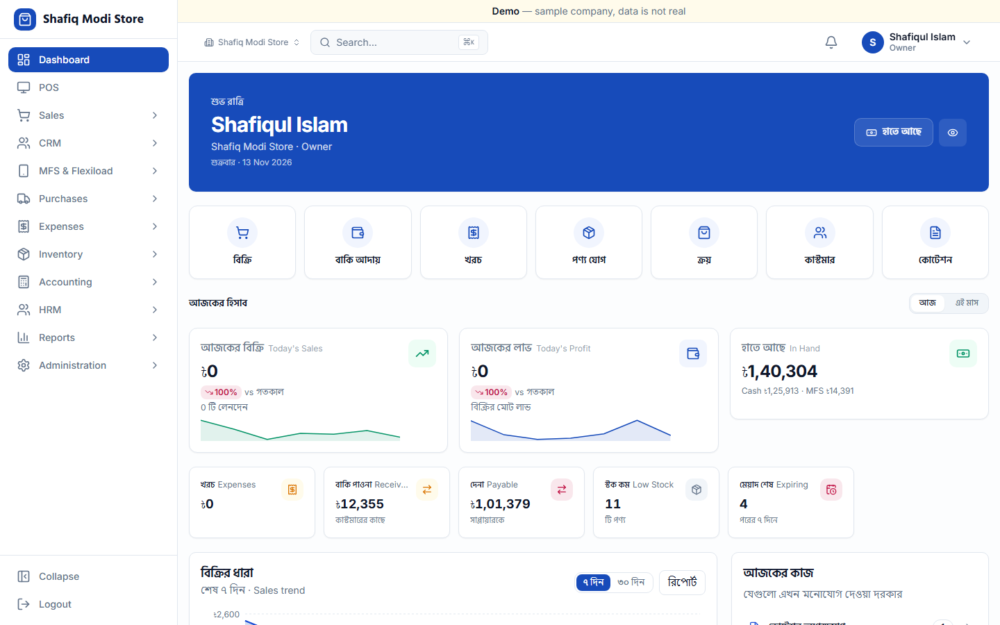
মোবাইল অ্যাপ — কাউন্টারের হাতিয়ার
ক্যাশিয়ার আর সেলসম্যানের কাজের জায়গা — বিক্রি, বাকি আদায়, দিন বন্ধ, খাতা মোড। নেট ছাড়াও বিক্রি চলে, পরে নিজে সিঙ্ক হয়।
APP ফোন/ট্যাব/ডেস্কটপে চলে।
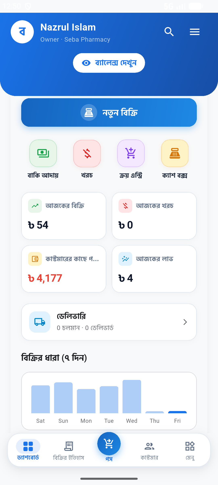
কে কী দেখে — ৫টা সহজ নিয়ম
একই সফটওয়্যার প্রতিটা দোকানে ভিন্ন মুখে আসে। কার কাছে কোন ফিচার দেখা যাবে তা ৫টা জিনিসে ঠিক হয়:
খুচরা / পাইকার / রেস্টুরেন্ট / সার্ভিস ব্যবসা
~৭০টা — ফার্মেসি, মুদি, সুপার শপ, মোবাইল শপ…
Free · Starter ৳৪৯৯ · Business ৳১,২৯৯ · Premium ৳২,৯৯৯/মাস
মালিক · ম্যানেজার · কর্মচারী — কর্মচারী শুধু নিজের কাজ দেখে
যেকোনো দোকানকে আলাদা ফিচার দেওয়া/বন্ধ করা যায়
পাইকারে "কাস্টমার" → "পার্টি"। অ্যাপ দোকানের ভাষা শেখে।
বিক্রি কীভাবে করবেন
৪ ধাপ · ১০ সেকেন্ডে একটা বিলPOS স্ক্রিনটাই দোকানের কাউন্টার — ওয়েবে হোক অ্যাপে, একই রকম কাজ।
POS খুলুন WEBAPP
মেনুতে "POS" / অ্যাপের নিচে গাড়ির আইকন। বারকোড স্ক্যান করুন বা নাম লিখে খুঁজুন — ছবিসহ পণ্য গ্রিডে চলে আসে।
পণ্য যোগ করুন
কার্ডে "+" চাপলেই বিলে যোগ। পরিমাণ বাড়ান-কমান, ডিসকাউন্ট দিন — পিসে বা কেজি/লিটারে (মুদির জন্য)।
পেমেন্ট নিন
ক্যাশ, bKash/Nagad, ব্যাংক, কার্ড — যেকোনো মিশ্র। বাকিও দেওয়া যায় — কাস্টমার বেছে আংশিক দিলে বাকিটা নিজে খাতায় জমা হয়।
ইনভয়েস দিন
বাংলা ইনভয়েস — দোকানের নাম-ঠিকানা, আইটেম, মোট বাকিসহ QR কোড। প্রিন্ট বা WhatsApp-এ পাঠানো যায়।
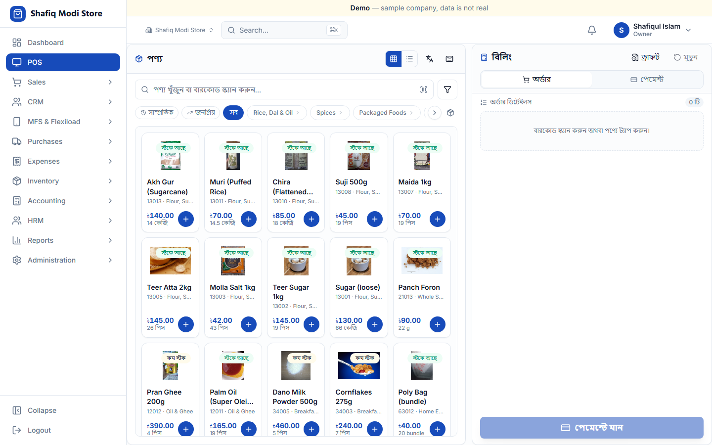
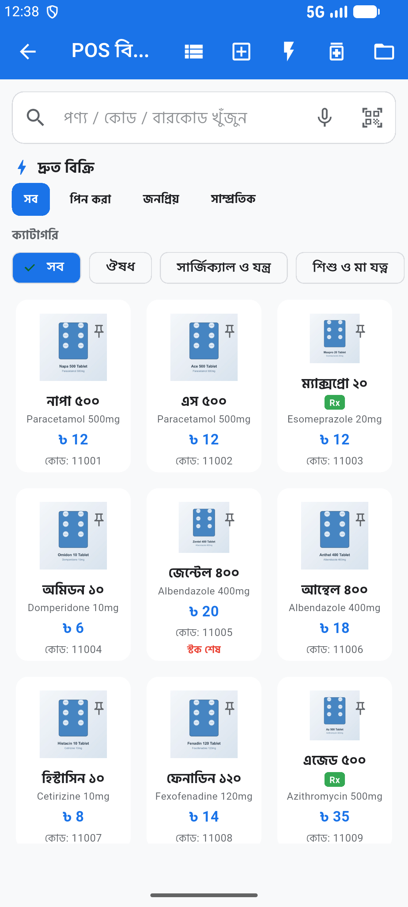
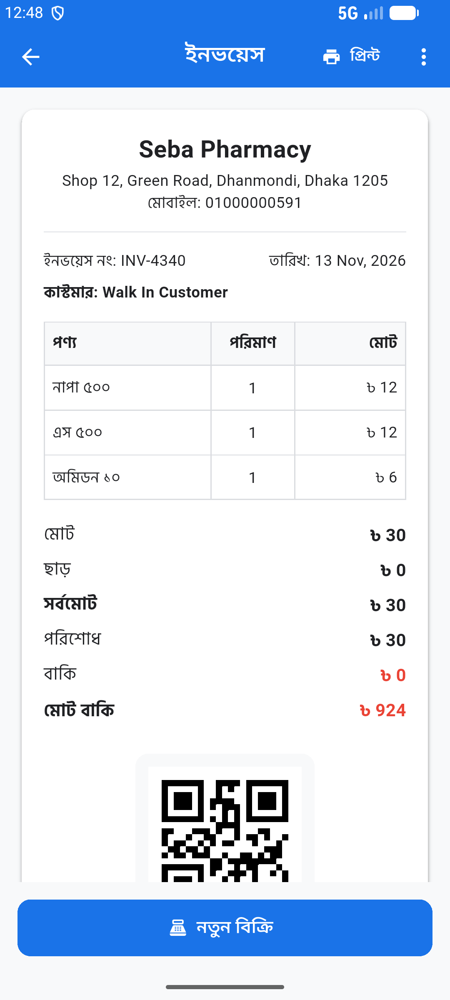
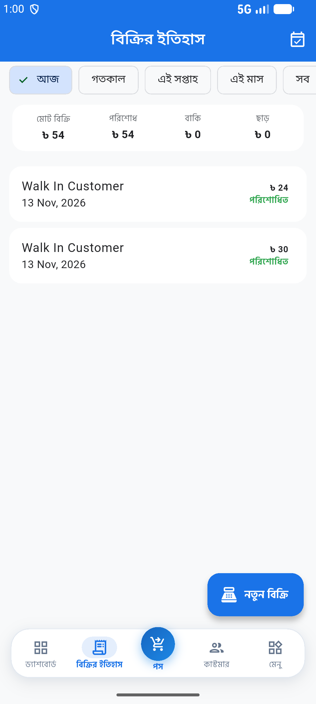
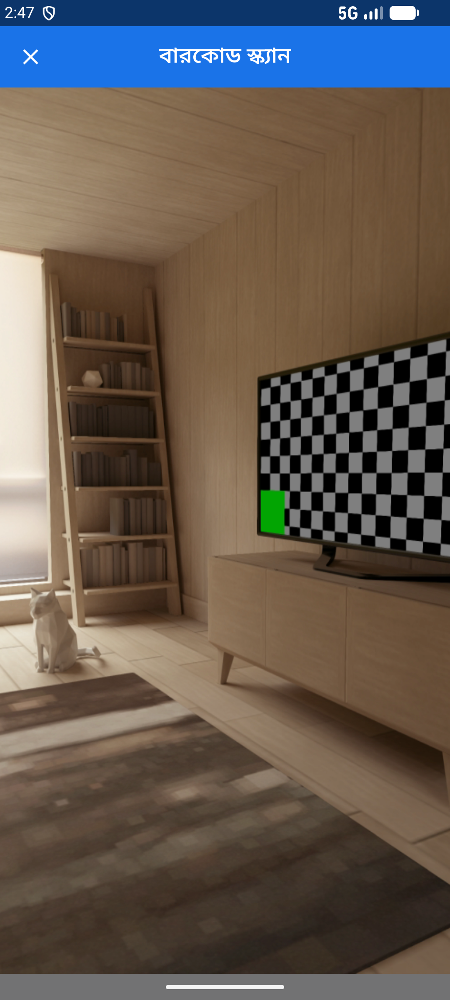
বাকি দিয়ে বিক্রি ও আদায়
বাকিতে বিক্রি
পেমেন্টের সময় কাস্টমার বেছে "বাকি" — নাম-ফোনসহ খাতায় জমা, তারিখসহ।
বাকি আদায়
কাস্টমার পেজে বা খাতা থেকে "আদায়" — পুরো বা আংশিক, যেকোনো পেমেন্টে। আদায়ের রেকর্ড থেকে যায়।
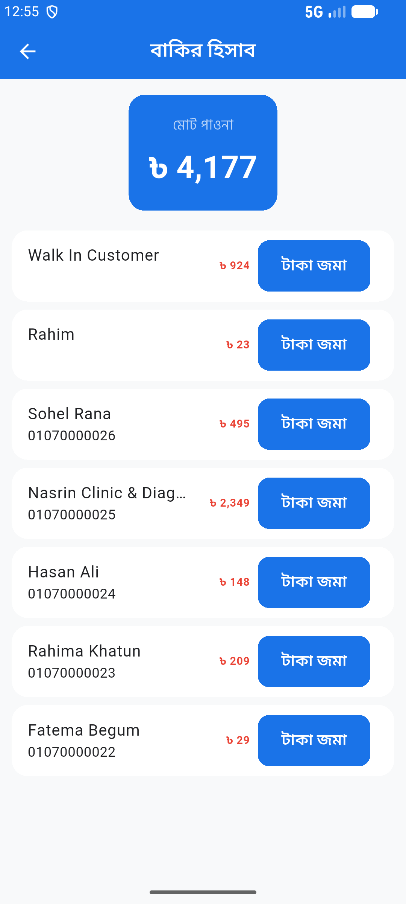
ক্রয় ও মজুদ
মাল কেনা → স্টক হিসাব → মেয়াদক্রয় করতে ৩টা ধাপ
নতুন ক্রয় WEBAPP
সাপ্লায়ার বাছুন → তারিখ-চালান নং → পণ্য খুঁজে পরিমাণ-দাম দিন। মুদি/ফার্মেসিতে প্রতি লাইনে মেয়াদও লেখা যায়।
পেমেন্ট বা দেনা
নগদ দিলে ক্যাশবক্স থেকে কমে; না দিলে সাপ্লায়ারের কাছে দেনা — পরে মিটায়।
"Post Purchase" চাপুন
স্টক নিজে বাড়ে, হিসাব নিজে জমা হয় — হাতে কিছু লিখতে হয় না। ভুল হলে রিটার্ন/বাতিল আছে।
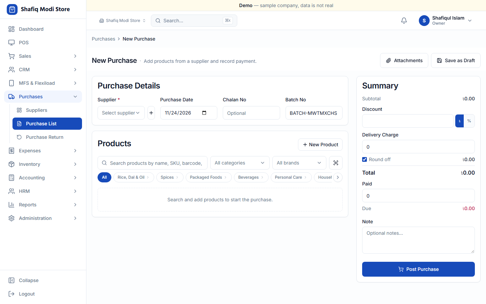
ইনভেন্টরি — যা যা ম্যানেজ হয়
দাম, কোড, স্টক, ছবি; "স্টক শেষ/কম স্টক" ব্যাজ। এক্সেল ইমপোর্ট-এক্সপোর্ট।
দলে সাজান; কার্টনে কিনে পিসে বিক্রি (UOM কনভার্সন)।
নষ্ট/ভাঙা/হারানো মাল — কারণসহ রেকর্ড।
আসল মাল গুনে সিস্টেম মেলানো — মাসে/বছরে একবার।
পিঁয়াজ-আলুর মতো দৈনিক দামের রেট-লিস্ট।
কোন ব্যাচ কবে শেষ — আগেই জানে, ফেরত দেওয়া যায়। Business+
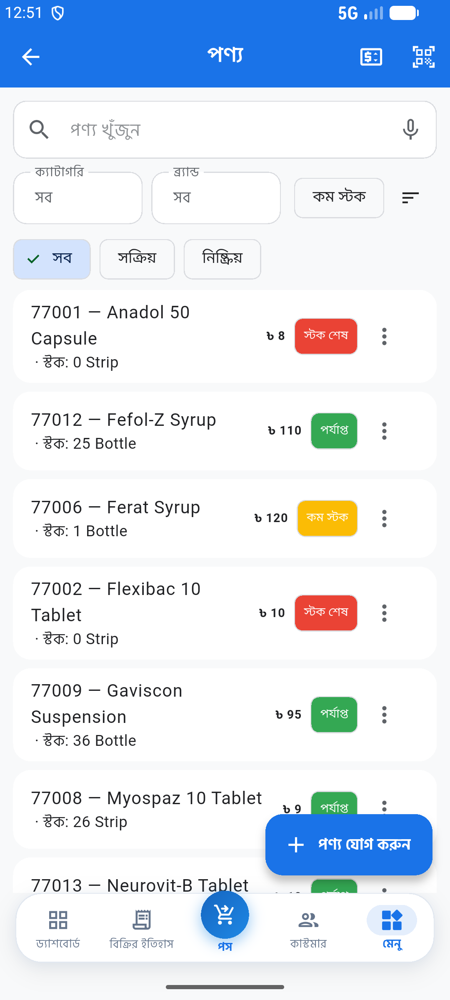
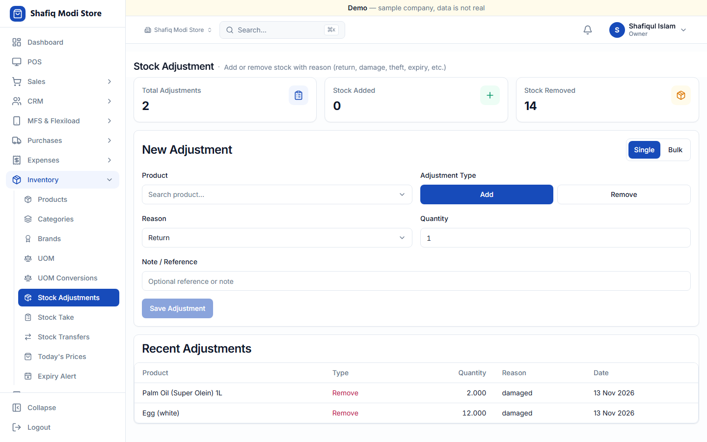
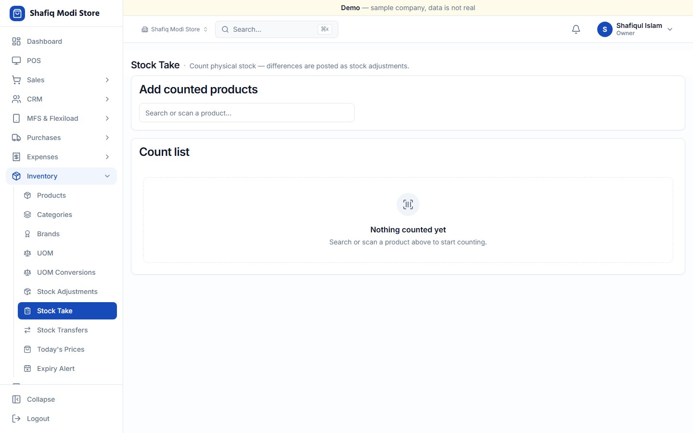
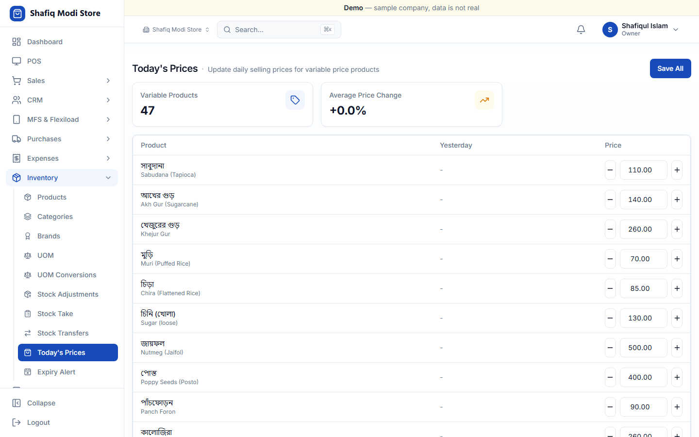
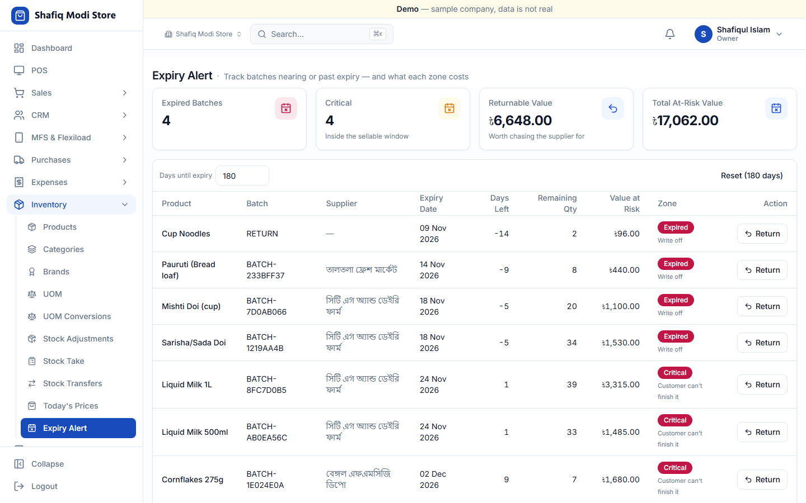
প্রতিটা পণ্যের ভেতরের খবর — ব্যাচ, দাম, মুনাফা APP
পণ্য তালিকায় নামে ট্যাপ করলেই পুরো অতীত খুলে যায় — কে কবে কত দামে দিল, কোন ব্যাচে কত মাল আছে, কার কাছ থেকে কেনা সবচেয়ে সস্তা। কিনতে বসার আগেই হিসাব হাতে পাওয়া যায়।
কোন ব্যাচ কোন চালানে এল, কত বাকি, মেয়াদে কত দিন — ব্যাচে চাপলে সরাসরি স্টক যোগ/বাদ বা সরবরাহকারীতে ফেরত করা যায়।
শেষ কেনা দাম, গড় কেনা দাম, গড় মুনাফা, আর কেনা-বেচা দামের ধাপে-ধাপে গ্রাফ — তারিখ বাছেও দেখা যায়।
একই পণ্যে কে সস্তা কে দামি — প্রতি সরবরাহকারীর সর্বনিম্ন/সর্বোচ্চ/সর্বশেষ দাম এক নজরে; সস্তা-দামি ব্যাজসহ।
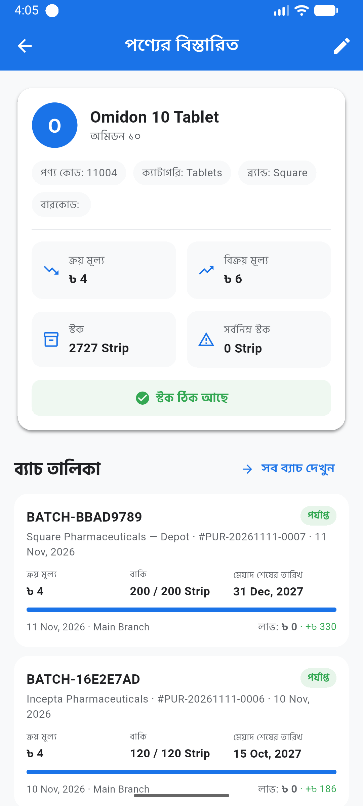
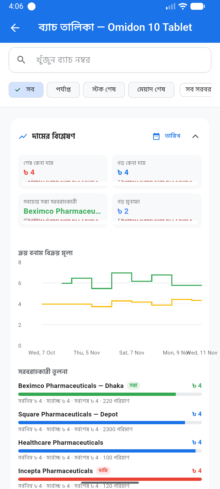
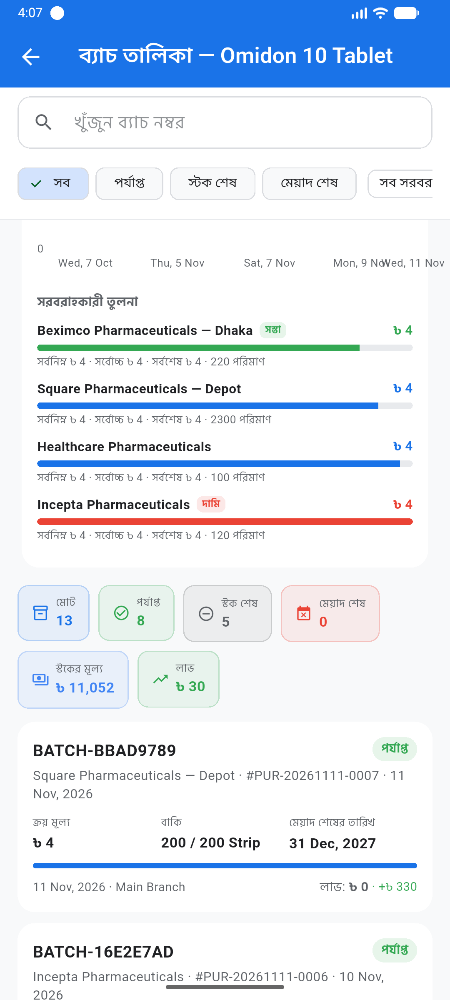
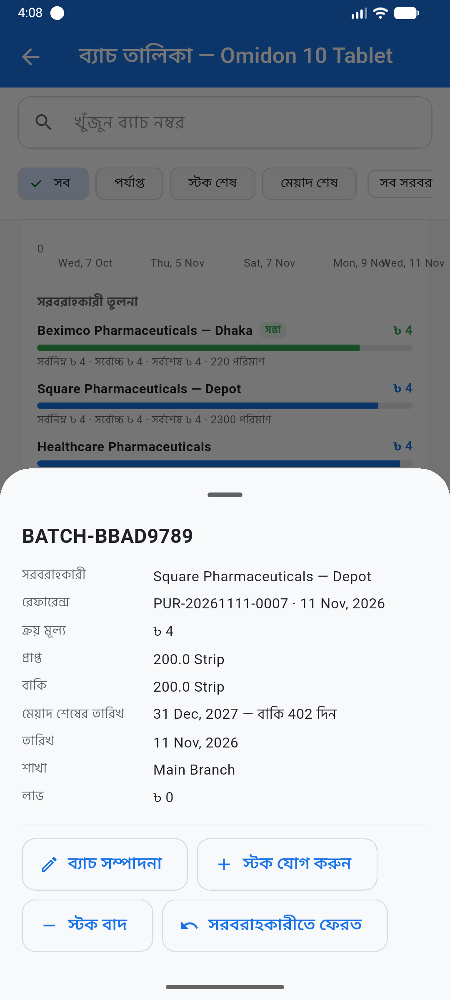
ভিড়ে কুইক সেল, ফাঁকায় আইটেম ঠিক — স্টকও ঠিক থাকে
ইনভেন্টরি চালানো দোকানেও ভিড়ের ঘণ্টায় পণ্য বাছার সময় থাকে না। তখন কুইক সেলে শুধু মোট টাকা লিখে বিক্রি শেষ করুন — ফাঁকা সময়ে বিলে আসল পণ্যগুলো বসিয়ে দিন। বিলের টাকা এক পয়সাও বদলায় না; ঠিক হয় শুধু স্টক আর লাভের হিসাব।
ভিড়ে শুধু টাকা লিখে বিক্রি APP
কুইক সেলে মোট মূল্য + পেমেন্ট — ব্যাস। কী কী নিল মনে রাখতে অ্যাপ বারের ক্লিপে ছবি বা ভয়েস নোট জুড়ে দিন; নোটেও লেখা যায়।
ফাঁকায় ইনভয়েস খুলে ⋮ মেনু
বিক্রির ইতিহাস → বিল → ডান-উপরের ⋮ — সেখানেই "আইটেম ঠিক করুন"; সাথে পেমেন্ট যোগ, আইটেম ফেরত, ইনভয়েস বাতিল।
আসল পণ্যগুলো বসিয়ে সংরক্ষণ
"+ পণ্য যোগ করুন" দিয়ে লাইন বসান — নিচে আইটেমের মোট বিলের টাকার সাথে মেলে কিনা দেখায়। বিল আর রশিদ আগেরটাই থাকে; বদলায় শুধু স্টক কমা আর লাভের হিসাব।
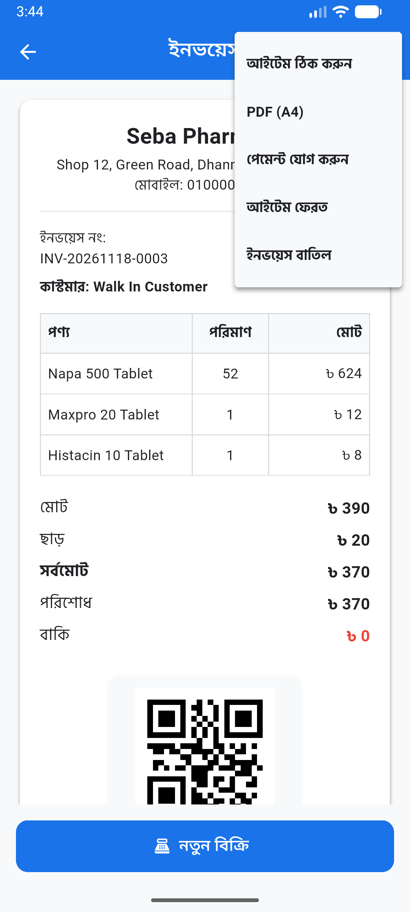
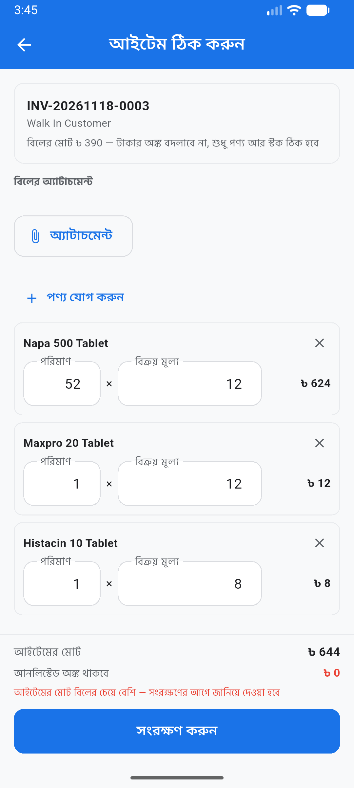
কুইক ক্রয়ের চালানেও পরে আইটেম ঠিক — মাল ঢোকার স্টক হিসাবও ঠিক থাকে।
ইনভয়েস মেনুর "আইটেম ফেরত"; কেনা মাল ফেরত গেলে পারচেজ রিটার্ন — দুদিকেই স্টক ঠিক হয়।
স্টক অ্যাডজাস্টমেন্ট, স্টক গোনা আর দিন বন্ধ — দিন শেষে টাকা আর মাল দুটোই মেলে।
রিপোর্ট
খাতা উল্টানো লাগে নাসব লেনদেন থেকে নিজে রিপোর্ট তৈরি হয়। মালিকের জন্য সবচেয়ে দামি অংশ।
আজকের বিক্রি-লাভ-খরচ-পাওনা-দেনা, কম স্টক, মেয়াদ — এক নজরে।
দিন/সপ্তাহ/মাসে বিক্রি-লাভ, গড় বিল, ট্রেন্ড, সেরা পণ্য।
প্রতিদিনের আসল-গেল আর জের — খাতার ডিজিটাল সংস্করণ।
কার কাছে কত পাবেন/দেবেন — কাস্টমার ও সাপ্লায়ার একসাথে।
মজুদে কত টাকার মাল, কোনটা ঘুরছে কোনটা শুয়ে।
P&L, ভ্যাট, বাকির বয়স, পার্টি খাতা — প্ল্যান অনুযায়ী।
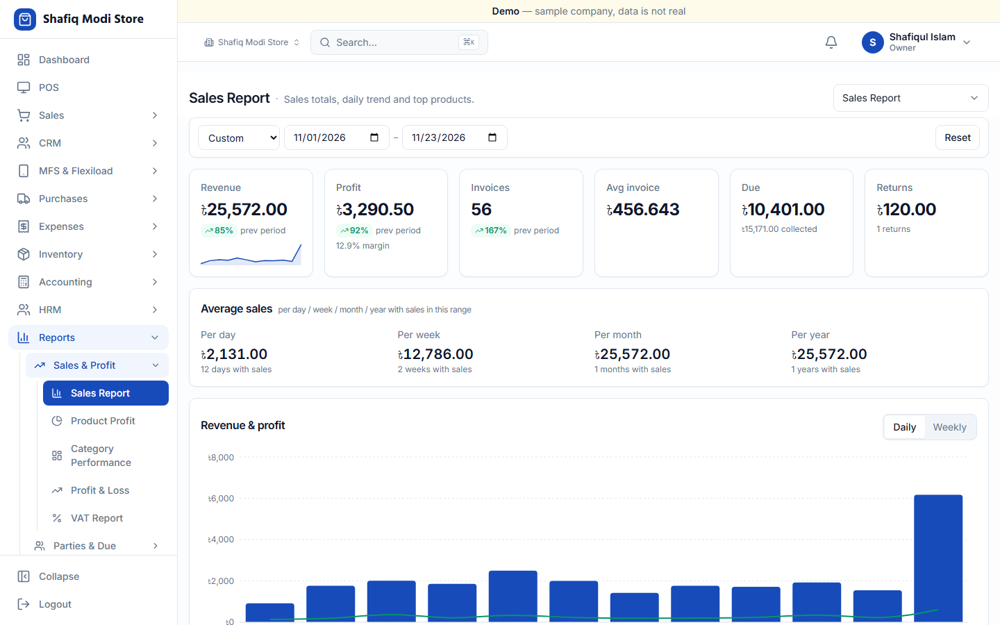
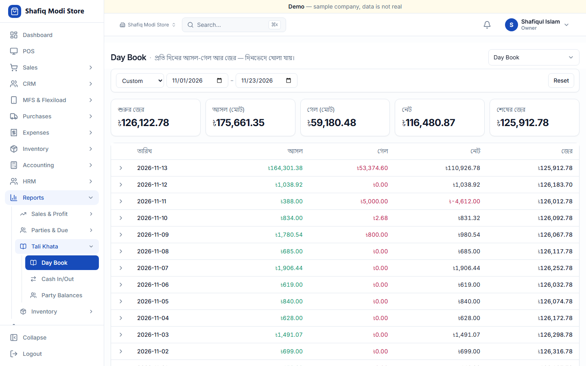
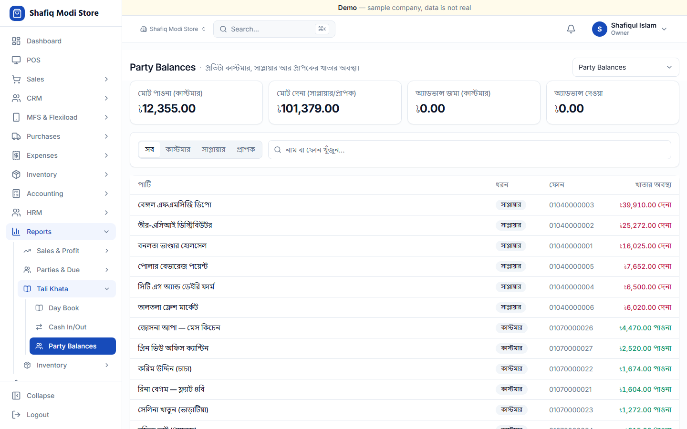
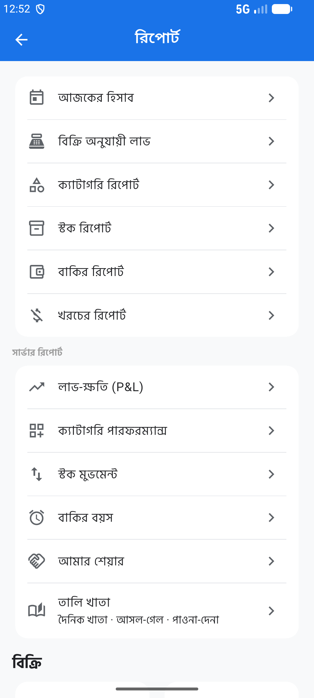
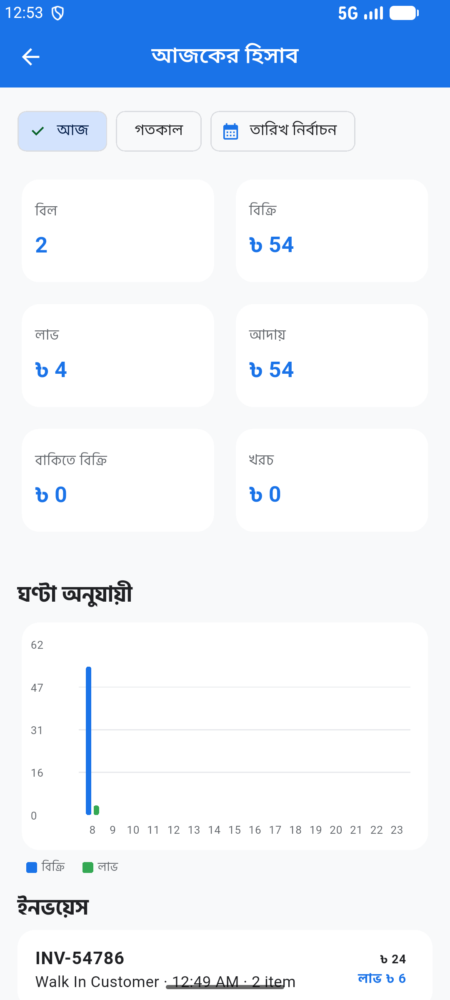
সিম্পল মোড (তালি খাতা)
ইনভেন্টরি ছাড়া হিসাবযে দোকানদার স্টক ম্যানেজ করতে চায় না — শুধু বিক্রি, বাকি, খরচ, ক্যাশ — তার জন্য পুরো অ্যাপ একটা সহজ ভিউতে নেমে আসে। বাকির খাতার ডিজিটাল রূপ। "তালি খাতা" মেনুতে যা যা থাকে:
মোট পাবো/দেবো, আজকের বিক্রি-আদায়-খরচ এক নজরে; কাস্টমার/সাপ্লায়ার/প্রাপক — সবার হিসাব একসাথে, সার্চ ও ফিল্টারসহ।
পণ্য না থাকলেও দাম লিখে বিক্রি — তালিকা বানানো লাগে না।
একইভাবে সরাসরি কেনার হিসাব — দেনা হিসাবেও চলে।
ভাড়া, খরচাপাতি, যেকোনো কাট খরচ — ক্যাশবক্স থেকে নিজে কমে।
ক্যাশ + bKash/Nagad ওয়ালেট একসাথে; জমা-উত্তোলন-ট্রান্সফার সব রেকর্ড।
দিনের শেষে সব হিসাব গুনে মিলিয়ে বন্ধ — নিচে বিস্তারিত।
তিন রকম মানুষের পাওনা-দেনার তালিকা আলাদা আলাদা।
দিনের সব বিল ফিরে দেখা যায়।
যেকোনো সময় পূর্ণ ভিউতে ফেরা — দোকান বড় হলে সঙ্গে বড়।
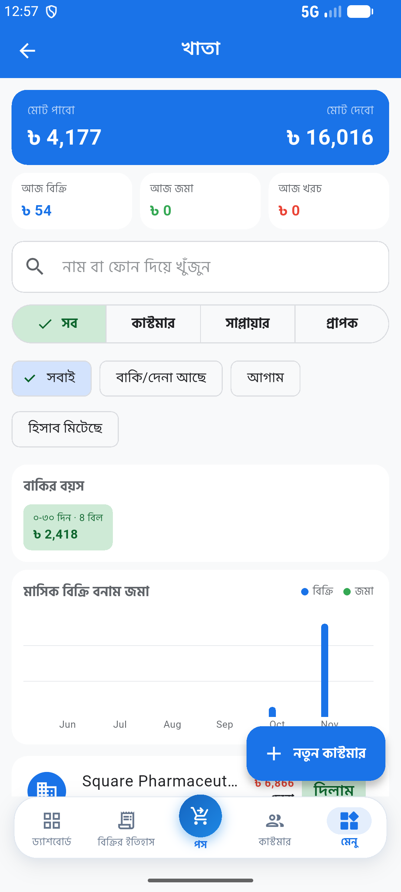
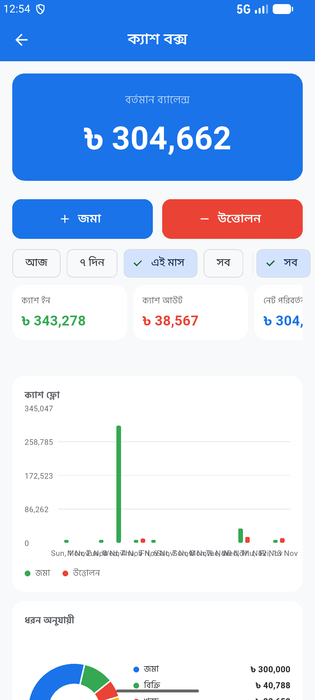
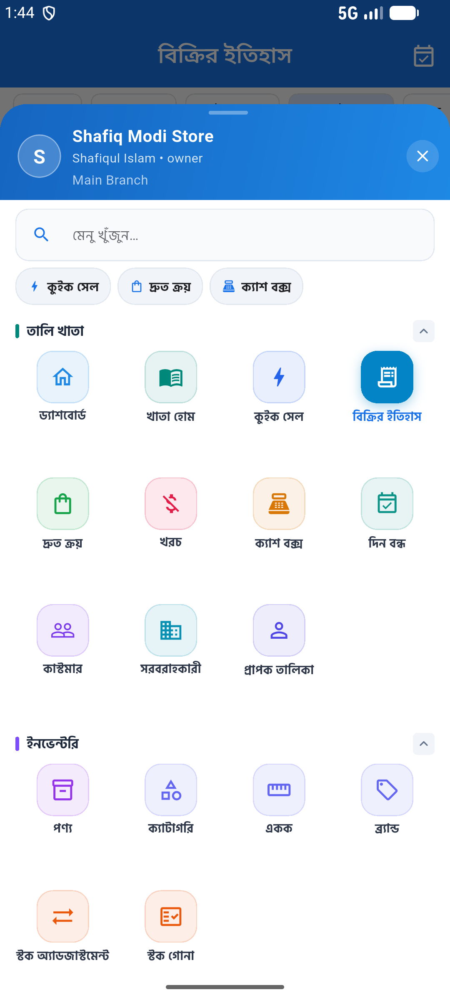
অ্যাপে সিম্পল মোড — ফোনের আসল স্ক্রিন
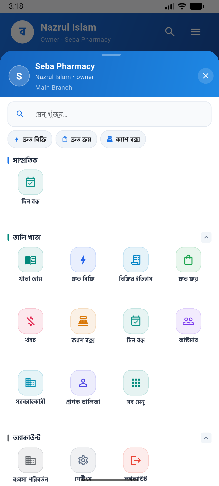
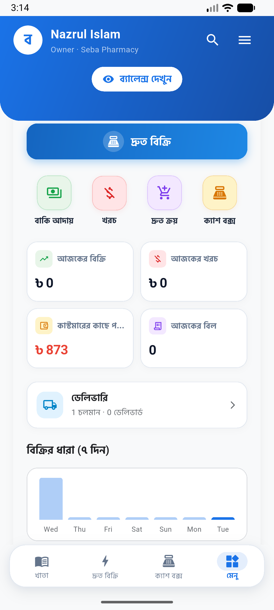
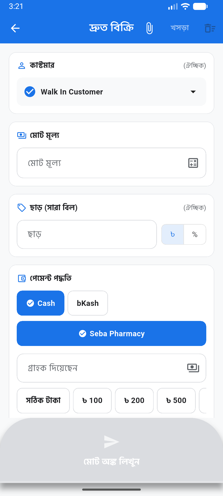
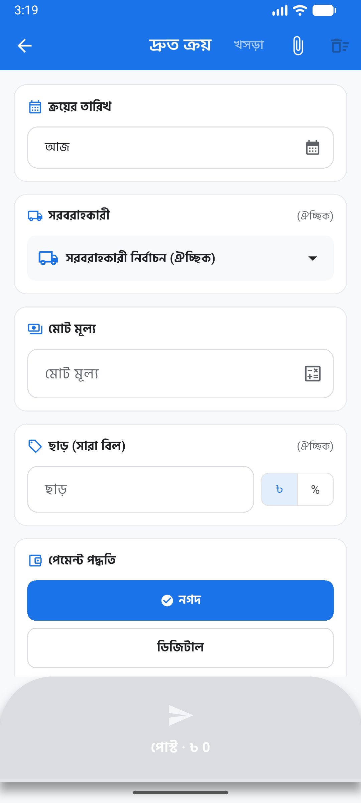
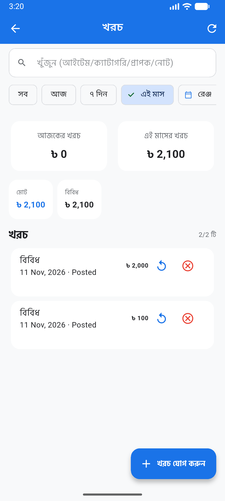
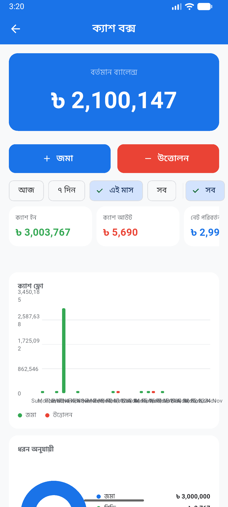
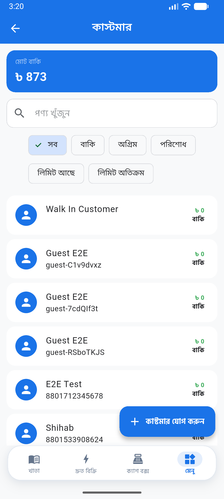
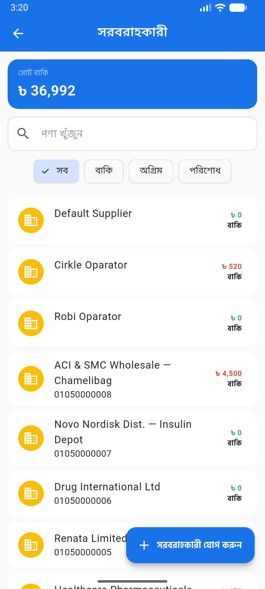
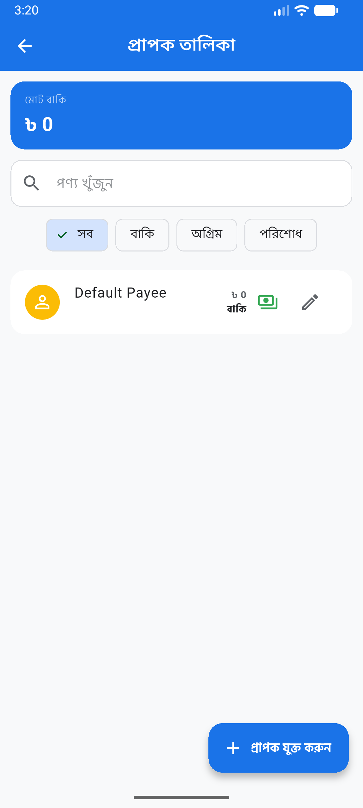
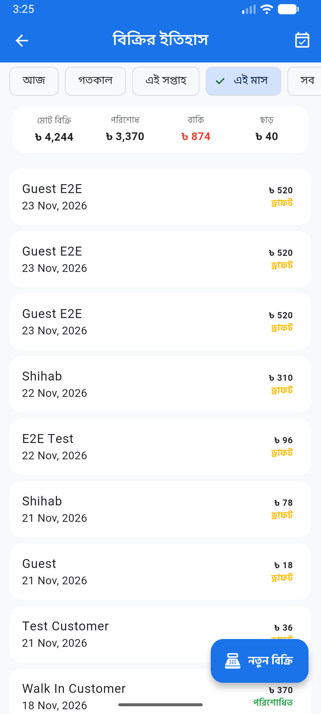
দ্রুত বিক্রি/ক্রয় — সরল দেখতে, ভেতরে পুরো বিলের শক্তি
"শুধু টাকা লিখে বিক্রি" ভাবলে অর্ধেক কথা বলা হয়। মোট মূল্যের পাশের ক্যালকুলেটর আইকনেই লুকিয়ে আছে পুরো বিলের হাতিয়ার — হিসাব লেখা থেকে পণ্য বসানো পর্যন্ত।
মূল্যের ঘরে 120*3+80*2 লিখতেই = ৳৫২০; ক্যালকুলেটরে চাপলে পুরো নামপ্যাড + আগের হিসাব — একই বার-বারের বিল এক ট্যাপে।
ক্যালকুলেটরের দ্বিতীয় ট্যাবে সার্চ/স্ক্যান/ "ঘন ঘন বিক্রি হয়" তালিকা থেকে পণ্য — পরিমাণ×দাম লাইন বানিয়ে "বিলে রাখুন" দিলে স্টকও কমে। শুধু টাকা চাইলে "শুধু মোটে বসান"।
সারা বিলে ৳ বা % ছাড়; "গোল করুন" টিক দিলে ২২৩ টাকা → ২২৩ না লিখে ২২০/২২৫ — রাউন্ড-অফ নিজে হিসাব হয়।
পরিশোধের ঘরে নোট-কাউন্টার: ৫০০×২ + ১০০×৩ গুনলেই মোট বসে, ফেরতও দেখায়। নগদ+বিকাশ মিলিয়ে দুই মাধ্যমে জমাও নেয়।
কাস্টমার বাছলেই পুরনো পাওনা/অগ্রিম দেখায় — "এই বিলের সাথে যোগ করুন" টিক দিলে এক বিলে আদায়। বাকি দিলে কাস্টমার বাধ্যতামূলক।
দ্রুত ক্রয়ের "আরও তথ্য"-তে চালান নম্বর, ব্যাচ নম্বর, ডেলিভারি চার্জ; তারিখও বদলানো যায়। দিন বন্ধের পরে কিনলে জিজ্ঞেস করে — ক্যাশবক্সে বসবে না শুধু খাতায় লেখা হবে।
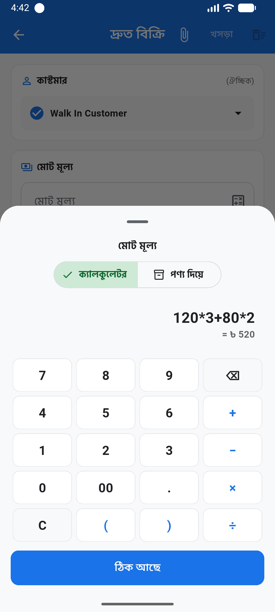
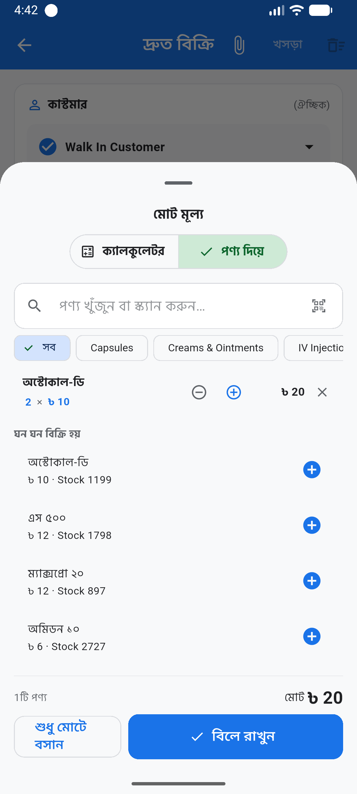
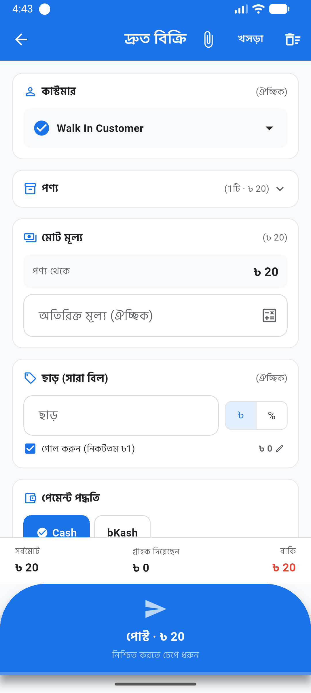
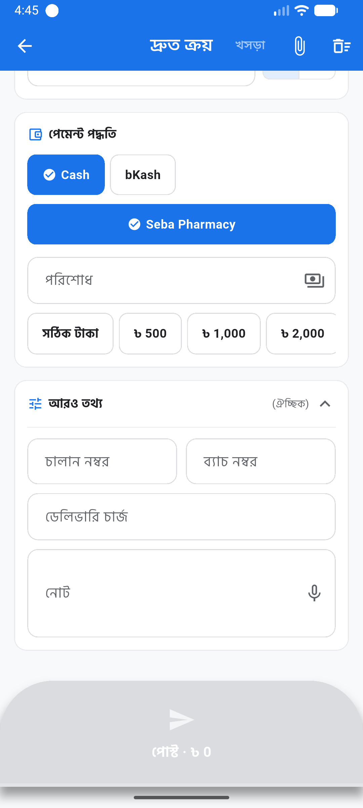
দিন বন্ধ — দিনের শেষের হিসাব মেলানো
এটাই সিম্পল মোডের সবচেয়ে জরুরি কাজ। দিন শেষে দোকানদার টাকা গুনে বলে "আজকে ঠিক আছে কিনা" — পুরো জিনিসটা এখানে হয়।
দিন বন্ধ খুলুন WEBAPP
অ্যাপে তালি খাতা মেনু → "দিন বন্ধ"; ওয়েবে Sales → Day Closing। তারিখ আর স্টাফ বেছে নিন।
দিনের সারসংক্ষেপ দেখুন
উপরে এক নজরে: আজকের লাভ, রিটার্ন, খরচ, পুরনো বাকি আদায়, সাপ্লায়ার-প্রাপকের দেনা পরিশোধ — সব।
৪টা হিসাব আলাদা আলাদা মেলান
বিক্রি (নিজের), ক্রয় আর খরচ (দোকানজুড়ে), আর ড্রয়ার (ক্যাশবক্সের নগদ)। প্রতিটায় "আসলে কত পেলাম/দিলাম" লিখুন — সিস্টেম নিজে দেখায় মিলে গেছে না ফারাক আছে।
ফারাক থাকলে সমাধান দিন
কম-বেশি থাকলে "দিন বন্ধের সমন্বয়" খরচে পোস্ট হয় বা বাকিতে যোগ হয় — একটা টাকাও হিসাবের বাইরে থাকে না।
"দিন বন্ধ" চাপুন
সব মিললে এক ক্লিকে বন্ধ। ভুলে গেলে রিওপেন করা যায়, আর History ট্যাবে আগের দিনের সব বন্ধের রেকর্ড থাকে।
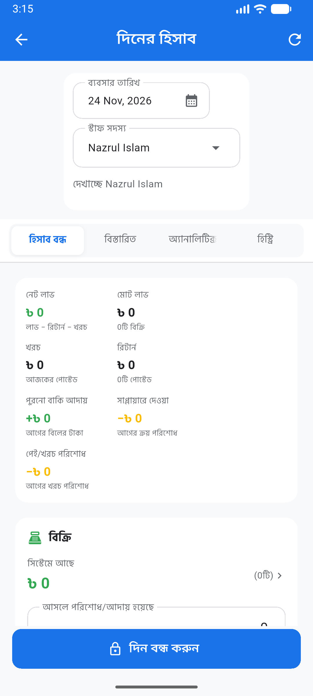
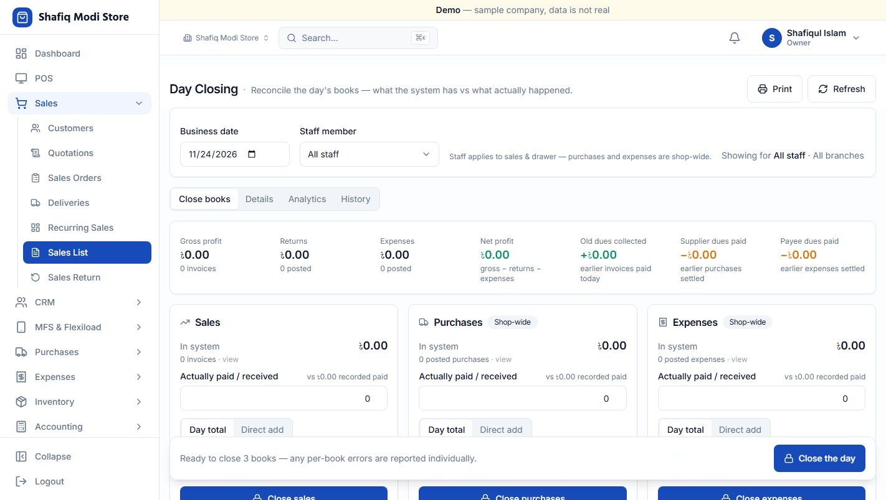
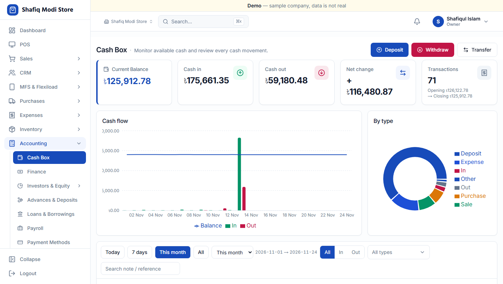
অ্যাপ → সেটিংস → "সহজ ভিউ" টগল।
অ্যাডমিন easy_mode অন — সব ডিভাইসে একসাথে।
ছোট দোকানের অনবোর্ডিং এভাবেই।
ফার্মেসি স্পেশাল
রেডি ওষুধ ডাটাবেসফার্মেসি খোলার সবচেয়ে বড় বাধা: হাজার ওষুধের নাম-জেনেরিক-কোম্পানি বসানো। আমাদের রেডি ডাটাবেস থেকে এক ক্লিকে ওষুধ আসে — ছবি, জেনেরিক, MRP, ফর্মসহ।
| জায়গা | কী হয় |
|---|---|
| অ্যাপ → পণ্য → "ক্যাটালগ থেকে খুঁজুন" APP | পুরো ডাটাবেসে সার্চ → একটা-একটা বা অনেকগুলো একসাথে যোগ |
| নতুন পণ্য ফর্ম | নাম টাইপ করতেই সাজেশন — জেনেরিক/কোম্পানি/ফর্ম অটো-ভরা |
| Rx স্ক্যান | প্রেসক্রিপশনের ছবি → ওষুধ শনাক্ত |
| ওষুধ ছবি স্ক্যান | প্যাকেটের ছবি → কোন ওষুধ তা চেনে |
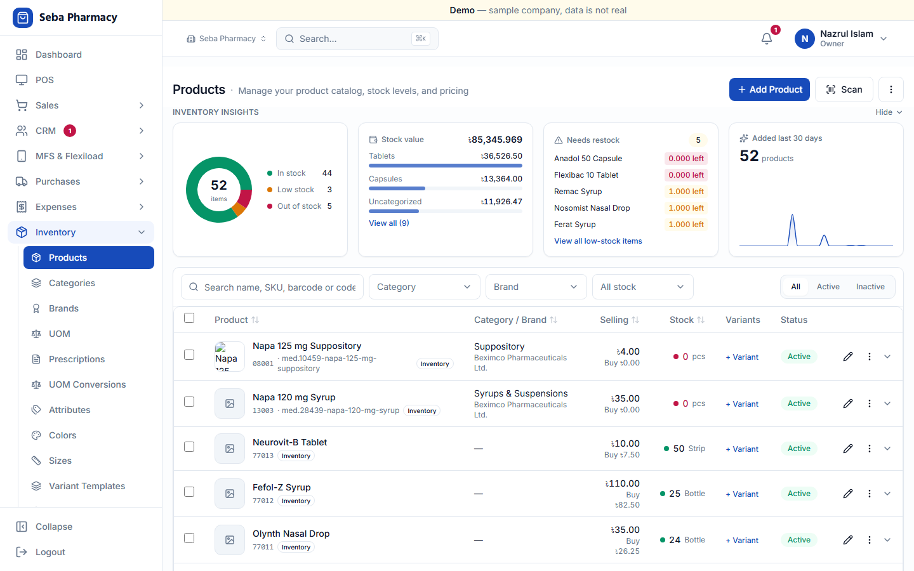
অ্যাপে ক্যাটালগ — ফোনের আসল স্ক্রিন
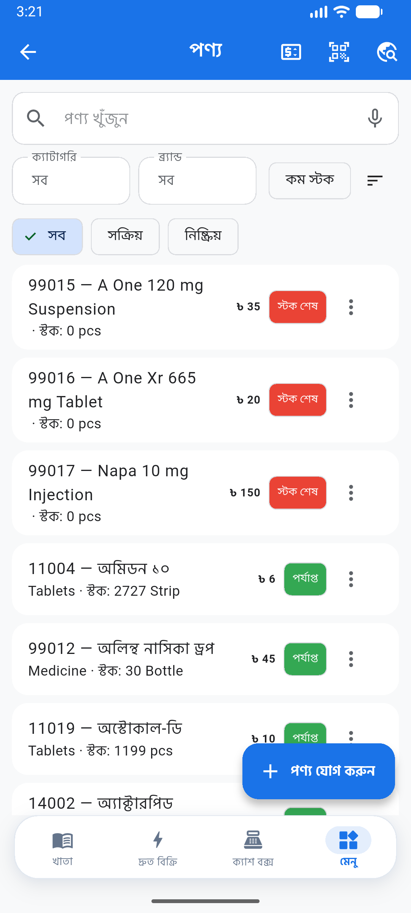
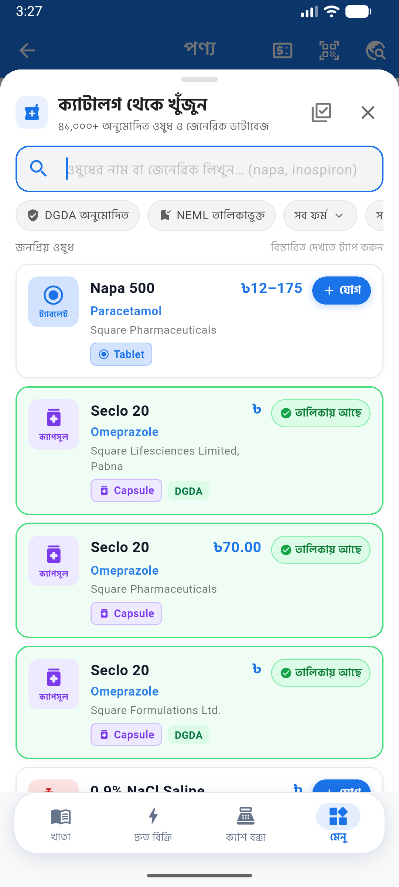
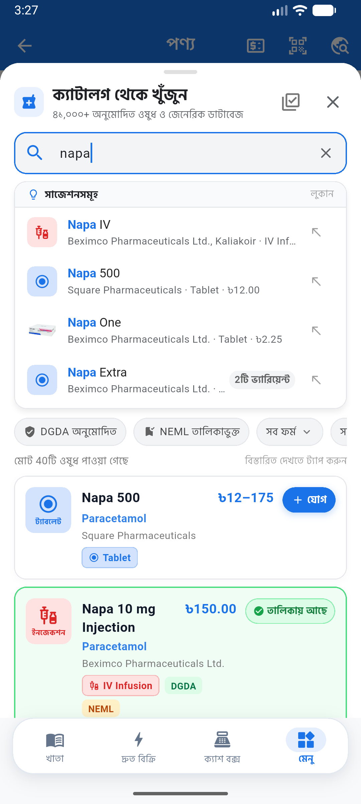
প্রেসক্রিপশন আর ঔষধের ছবি দিয়েই বিক্রি APP
কাউন্টারে ক্রেতা প্রেসক্রিপশন বা এক মুঠো স্ট্রিপ ধরলে টাইপ করতে হয় না — ছবি তুললেই ওষুধের নাম পড়ে কার্টে বসে যায়। POS-এর উপরের আইকনেই দুটো যাদু।
ঔষধের আইকনে চাপলে সংরক্ষিত প্রেসক্রিপশনের তালিকা — রোগীর নাম, ডাক্তার, তারিখ, কয়টা ওষুধসহ। একটা বেছে দিলেই ওষুধগুলো কার্টে।
"নতুন Rx স্ক্যান" → ছবি তুলুন — ওষুধের নাম, ডোজ, "১+০+১" রুটিন, কত দিন — সব পড়ে আসে। ভুল থাকলে মিলিয়ে সংরক্ষণ — রোগী-ডাক্তার-রেজিসহ Rx আর্কাইভে জমা থাকে।
ক্যামেরা আইকনে এক মুঠো স্ট্রিপ/বক্সের ছবি — নামগুলো পড়ে দোকানের পণ্যের সাথে মিলিয়ে কার্টে বসায়। তালিকায় না থাকলে ক্যাটালগ থেকে "যোগ" দেওয়ার অপশনও আসে।
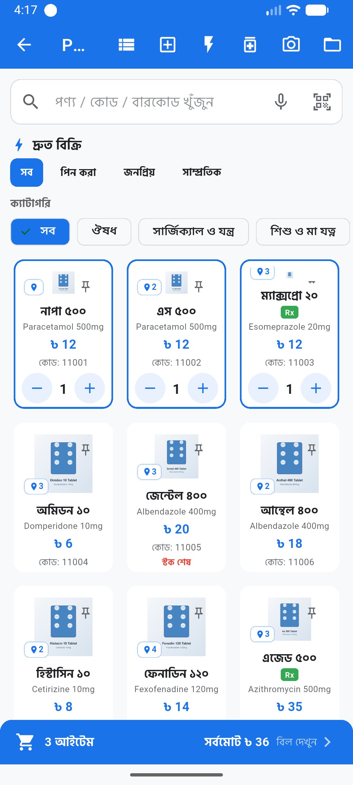
মেয়াদ — শুধু অ্যালার্ট না, বিক্রির ভেতরেই রক্ষা WEBAPP
কম মেয়াদের ব্যাচ আগে বিক্রি হয় — ক্যাশিয়ারকে ভাবতে হয় না; চাইলে ব্যাচ বেছে নির্দিষ্ট লটও দেওয়া যায়।
ক্রেতার কেনা পরিমাণ মেয়াদের আগে শেষ হবে না বুঝলে বিক্রির আগেই সতর্ক করে — "মেয়াদ বাকি X দিন (কোর্স লাগবে ~Y দিন)"। ইন্টারনেট ছাড়াও কাজ করে।
মাল ঢোকানোর ফর্মে মেয়াদের ঘরে ক্যামেরা — প্যাকের ওপরের EXP নিজে পড়ে বসে যায়, টাইপ ভুল হয় না।
কার্টে প্রেসক্রিপন-জরুরি ওষুধ থাকলে বিক্রি আটকে দেয় — রোগী/ডাক্তার/রেজি নং আর প্রেসক্রিপশনের ছবি জমা নিলেই ছাড়ে; রেকর্ডটা Rx আর্কাইভে বিক্রির সাথে যুক্ত থাকে।
ব্যাচ খতিয়ান থেকেই "সরবরাহকারীতে ফেরত" — চালান থেকে সব তথ্য ভরে আসে, হাতে কিছু লিখতে হয় না।
প্রথমে ফোনেই পড়ার চেষ্টা (ফ্রি), একই ছবি আবার দিলে আগের ফল (ফ্রি) — শুধু নতুন AI পড়ায় স্ক্যান টোকেন কাটে; শেষ হলে প্যাক কেনা যায়।
ai.medicine_photo ফিচার আর স্ক্যান টোকেন আছে কিনা দেখুন।
Rx গেট কাজ করে পণ্যে "প্রেসক্রিপন প্রয়োজন" চিহ্ন থাকলে।একই মলিকিউলের ব্র্যান্ড খুঁজে দেয় — একটা না থাকলে বিকল্প।
আগে মেয়াদ শেষ হওয়া ব্যাচ আগে বিক্রি হয় — নিজে সাজে।
CATALOG_URL) চালু আছে কিনা দেখুন।দোকানের ম্যাপ
"পণ্য কোথায়?" — সেটআপ গাইডবড় দোকানে "ম্যাগি কোথায়?" — উত্তর এখন মোবাইলে। চার ধাপে চালু করুন।
ম্যাপ খুলে উইজার্ড চালান WEB
Inventory → "দোকানের ম্যাপ" → "সেটআপ উইজার্ড"। ৮টা ধাপে নিয়ে যায় — দোকানের মাপ (ফুট/মিটার) দিয়ে শুরু।
ফার্নিচার বসান
কয়টা তাক/র্যাক/ফ্রিজ/কাউন্টার বলুন — উইজার্ড সাজায়। মুদিতে বস্তার স্ট্যাক-সবজির ক্রেট, ফার্মেসিতে ড্রয়ার-ফ্রিজ। রঙে জোন আঁকুন ("ওষুধ জোন", "সারি A")।
পণ্য তাকে বসান
তাকে QR লেবেল লাগান → পণ্য স্ক্যান/তালিকা থেকে লোকেশন অ্যাসাইন। "লোকেশনহীন" ব্যাজ দেখায় কতটা বাকি।
খুঁজে পথ দেখুন APP
অ্যাপে ম্যাপে "পণ্য খুঁজুন" লিখুন — সেই তাক পর্যন্ত হাঁটার পথ আঁকে।
অ্যাপে ম্যাপ — আসল স্ক্রিন
বিক্রির সময়ই পথ জানা যায় — আলাদা করে খুঁজতে হয় না
ম্যাপে পণ্য বসানো থাকলে কাউন্টারের বিক্রির ভেতরেই ঠিকানা আসে। ছেলেকে আর জিজ্ঞেস করতে হয় না "ওটা কোথায় রাখলি?"
POS-এর প্রতিটা পণ্যের কার্ডে ম্যাপ-পিন আর তাকের নম্বর — ট্যাপ/ক্লিক দিলেই সেই তাকে ম্যাপ খোলে।
বিলে ঢোকানো পণ্যের নিচে "র্যাক A — প্রচলিত · তলা ৩" লেখা থাকে — চাপলে সেই জায়গার পথ দেখায়।
"সব আইটেমের লোকেশন ম্যাপে দেখুন" চাপলে বিলের সব পণ্যের জায়গা নম্বর দিয়ে জ্বলে, একটাই হাঁটার পথে সাজে — "পরবর্তী: কোন তাক"ও দেখায়।
2D আর 3D — দুটোই আছে
ডেমো ও লগিন
২৫ মিনিটের স্ক্রিপ্টসব পাসওয়ার্ড Demo@12345। এই ক্রমে দেখালে পুরো গল্প বেরিয়ে আসে।
মুদি দোকানে শুরু — ৮ মিনিট APP
01000000701 (Shafiq Modi Store) → সহজ ভিউ → করিম চাচার বাকি আদায় →
ক্যাশবক্স → দিন বন্ধ।
দেখানো হবে: ইনভেন্টরি না চালালেও পুরো হিসাব চলে।
পূর্ণ ভিউ — ৪ মিনিট APP
"সব মেনু" → মেয়াদসহ ক্রয়, ফ্রি অফার, আজকের দাম, স্টক গোনা।
দেখানো হবে: দোকান বড় হলে এখানেই বড় হয়।
ফার্মেসি — ৮ মিনিট WEB APP
01000000591 (Seba Pharmacy) → "ক্যাটালগ থেকে খুঁজুন" → "নাপা" → বাল্ক-অ্যাড →
মেয়াদ অ্যালার্ট → Rx স্ক্যান।
দেখানো হবে: ফার্মেসির জন্য আলাদা ফিচার।
ম্যাপ — ৩ মিনিট WEB
/shop-map → 3D → অ্যাপে "পণ্য খুঁজুন" পথ দেখান।
রোল প্রমাণ — ২ মিনিট
01000000592 (ফার্মাসিস্ট) লগিন → সেটিংস/ফাইন্যান্স নেই।
দেখানো হবে: কর্মচারী শুধু নিজের কাজের মেনু দেখে।
লগিন তালিকা
| কোম্পানি | লগিন | রোল | কী দেখাবেন |
|---|---|---|---|
| Shafiq Modi Store | 01000000701 | মালিক | খাতা মোড, বাকি, UOM, মেয়াদ |
| Seba Pharmacy | 01000000591 | মালিক | ক্যাটালগ→পণ্য, Rx, FEFO, কন্ট্রোল্ড |
01000000592 | ফার্মাসিস্ট | কর্মচারী-রোল ভিউ | |
| Banalata Bhandar (পাইকার) | 01000000401 | মালিক | টিয়ার প্রাইস, "পার্টি", মাল্টি-ব্রাঞ্চ |
01000000413 | উত্তরা সেলসম্যান | ব্রাঞ্চ-স্কোপড | |
| Dhaka Mobile Zone | 01000000001 | মালিক | পাশের সেগমেন্ট: IMEI/EMI/রিপেয়ার |
মূল পয়েন্ট এক নজরে
- হাজার ওষুধ নিজে টাইপ করতে হয় না — ডাটাবেসে আগেই আছে
- ইনভেন্টরি ছাড়াও পুরো হিসাব চলে — সিম্পল মোডে
- মেয়াদ শেষের আগেই অ্যাপ জানায় — মাসে হাজার টাকা বাঁচে
- নতুন কর্মচারী ম্যাপ দেখে নিজেই পণ্য খুঁজে নেয়
- দোকানের ধরন অনুযায়ী অ্যাপ নিজে ফিচার ঠিক করে
- নেট গেলেও বিক্রি চলে — পরে নিজে সিঙ্ক হয়